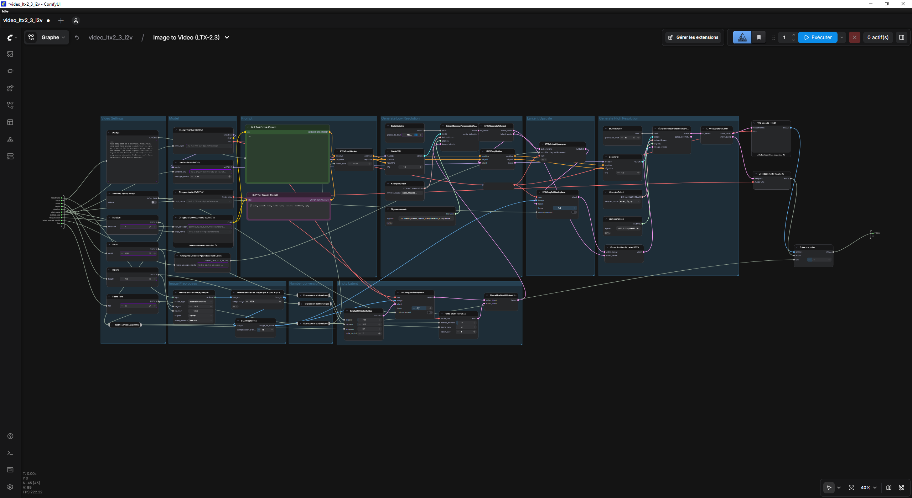
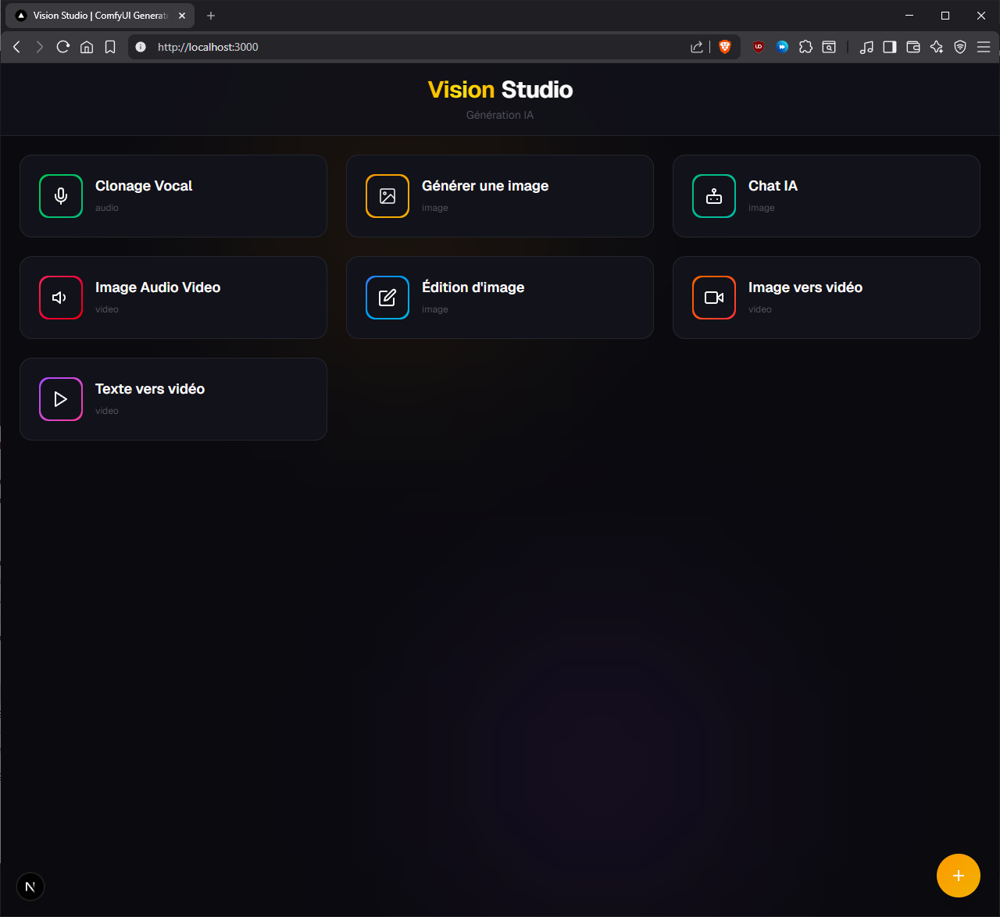
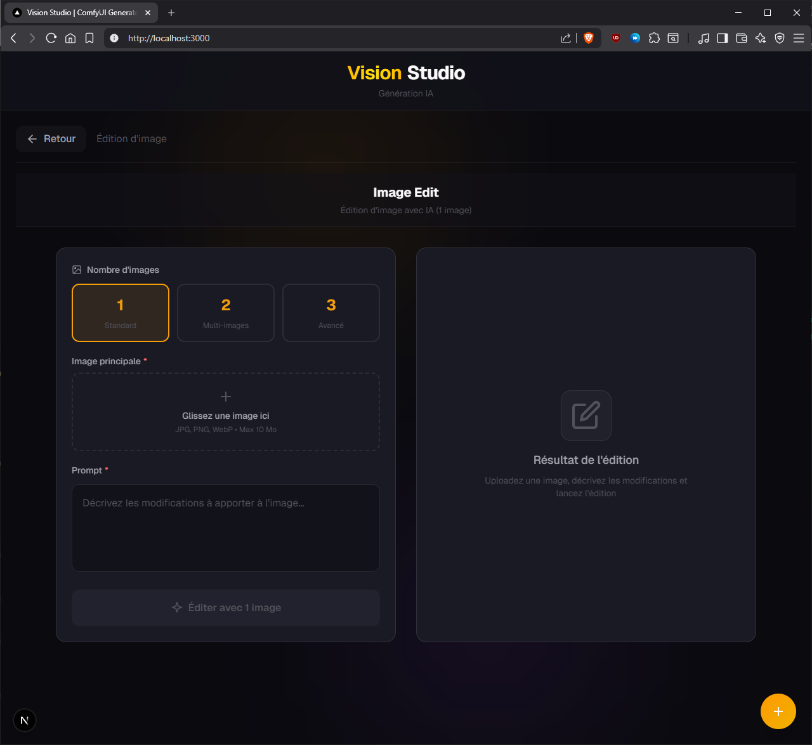
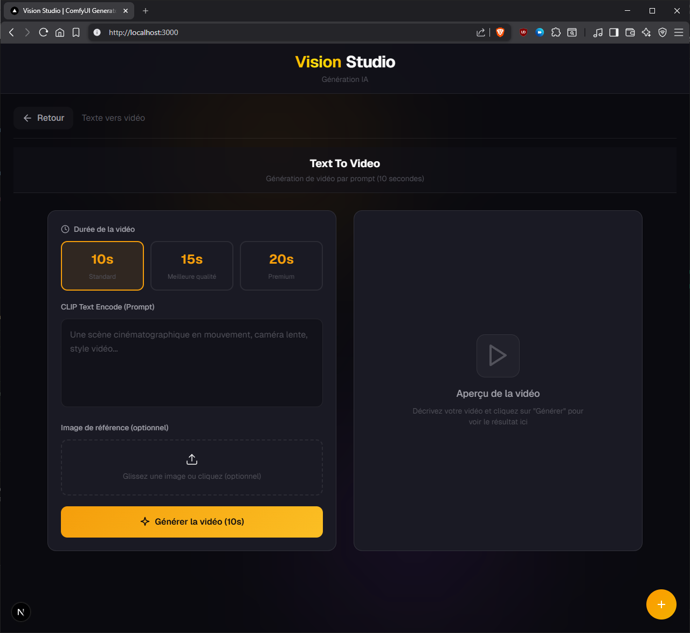
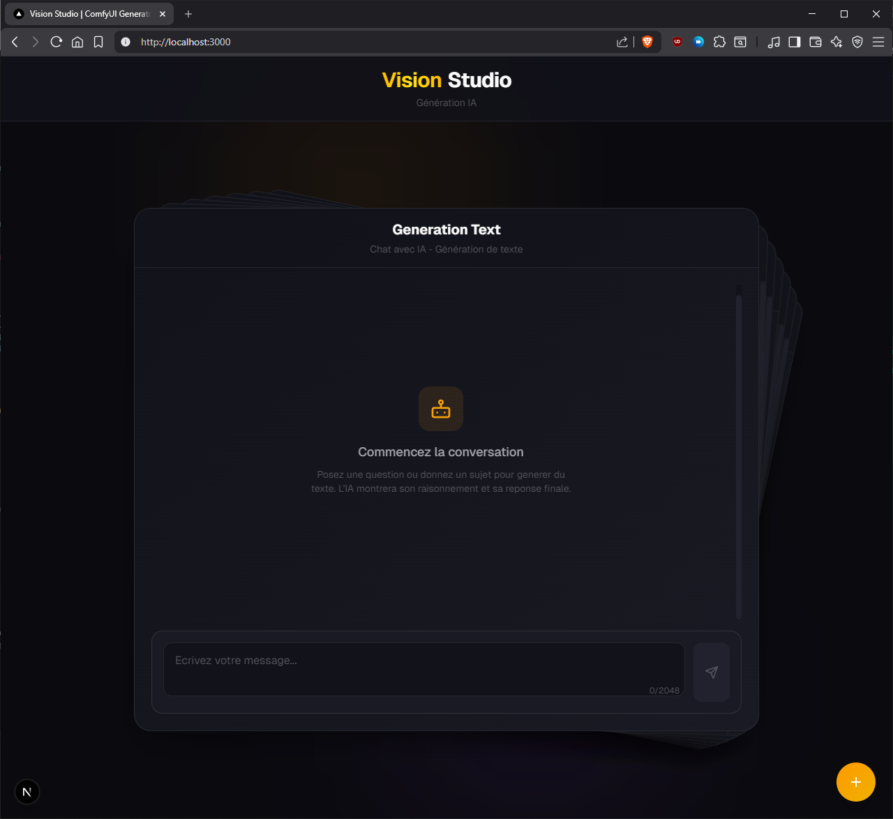
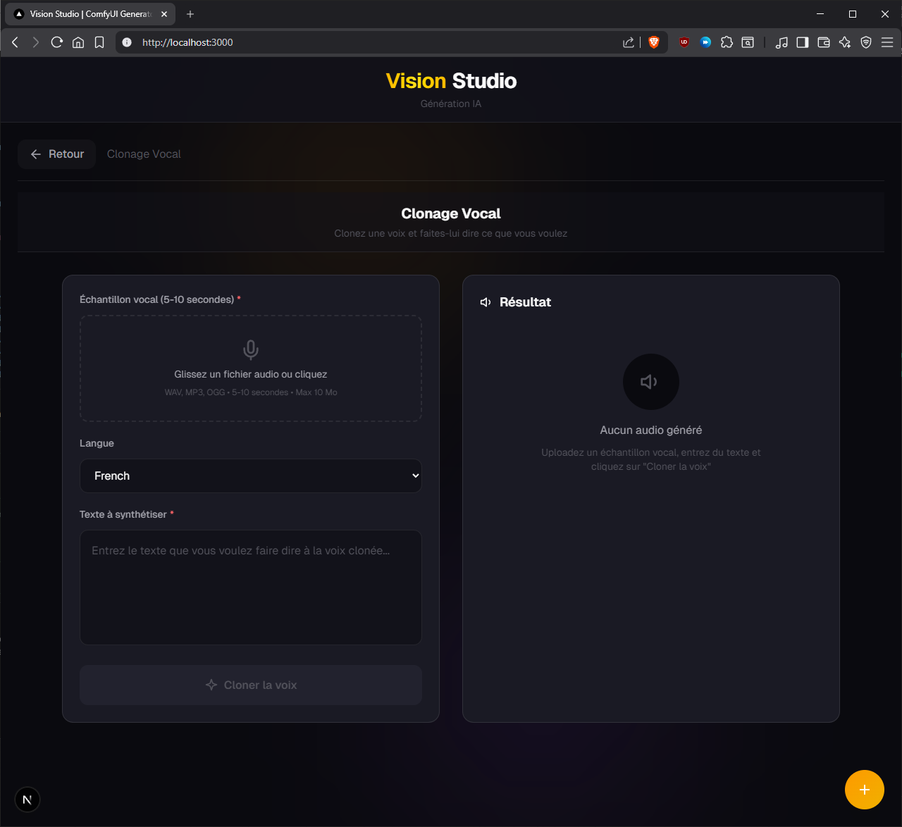

L'histoire commence avec un test d'un mois de Gemini. Je décide alors de créer mon premier compte TikTok avec du contenu généré par IA, afin d'éviter de produire inutilement des vidéos ou des images. Une fois la période d'essai terminée, je choisis de ne pas poursuivre l'abonnement.
Je commence donc à faire des recherches et découvre ComfyUI. Je me mets alors à générer mes premières vidéos et images en local. Mais cela ne me suffit pas. Je veux aller plus loin et me replonger sérieusement dans l'IA, en local cette fois.
Ayant investi dans un ordinateur assez puissant pour jouer, je souhaite désormais l'exploiter pleinement, le pousser dans ses retranchements. Je me fixe alors un défi : une semaine entière consacrée exclusivement à la veille autour de l'IA locale, des modèles, et surtout aux bases fondamentales.
Comprendre réellement ce que signifient les noms des modèles. Par exemple : qwen/qwen3.6-35b-a3b. Pourquoi "35b" ? Que signifie "a3b" ? Comment choisir un modèle en fonction de sa carte graphique ou de sa VRAM ?
Durant cette semaine intense, je me donne également un objectif concret : créer une interface web me permettant de générer facilement et rapidement des vidéos et des images.
I - IA locale & LM Studio
Étant sur Windows (je n'ai pas vraiment le choix pour le moment — je ne peux pas encore me permettre un Mac ou une seconde configuration, et je souhaite continuer à jouer), j'installe LM Studio.
Pourquoi LM Studio plutôt qu'Ollama ? Simplement parce que j'apprécie son interface, et de toute façon, il repose sur llama.cpp.
Après quelques recherches, je réfléchis au modèle à utiliser et je choisis qwen/qwen3.6-35b-a3b. Il est adapté à ma carte graphique et permet notamment d'intégrer des images en plus des prompts textuels. J'installerai plus tard une version uncensored… mais ça, c'est une autre histoire.
J'installe ensuite OpenCode et configure le fichier nécessaire pour qu'il utilise mon modèle. C'est parti pour les tests !
Je commence simplement : je lui demande de créer un morpion. Puis je compare le résultat avec des modèles payants comme Opus 4.6. Ce n'est pas une tâche complexe, mais je veux vérifier qu'il gère correctement les bases.
Résultat : je suis satisfait. On peut continuer le projet.
II - ComfyUI — Génération de vidéos / images
Au début, j'utilisais directement l'interface de ComfyUI pour créer mes vidéos. Mais très vite, je trouve cela peu pratique. Je me perds dans les nombreux onglets qui s'accumulent sans que je m'en rende compte.
À chaque ouverture, je dois recharger le workflow, remettre le prompt, charger les images… Et si je veux faire autre chose, je dois recommencer. Bref, ça devient vite frustrant.
Je décide donc de changer d'approche : utiliser l'interface uniquement pour créer mes workflows.
Un workflow, c'est en quelque sorte un plan qui permet de connecter différents modules (ou "nœuds") afin d'obtenir le résultat souhaité.
Je vais ensuite exploiter l'API de ComfyUI à travers une application web, qui me servira d'outil central pour gérer toutes mes tâches.

III - Connexion — Projet
Le projet s'articule autour de trois axes principaux :
- l'API de ComfyUI (déjà en place)
- un serveur faisant le lien entre ComfyUI et une interface web
- une interface utilisateur (web + mobile)
Le serveur joue un rôle central : il sert d'API intermédiaire entre ComfyUI et mes interfaces. Il me permet de stocker les prompts, gérer les workflows, et abstraire toute la complexité derrière une couche simple à utiliser. C'est d'ailleurs cette même base que j'ai pu réutiliser plus tard pour une application mobile dédiée à l'édition de photos par IA.
Pour construire tout ça, je me suis largement appuyé sur mon IA locale. Je lui ai donné des directives simples et efficaces :
- une interface en Next.js
- un serveur en Express.js
- une application mobile avec Expo

Je n'ai pas cherché à complexifier inutilement l'architecture. L'objectif était clair : un projet personnel, non destiné à être déployé en production. Pas besoin donc de microservices ou d'infrastructure lourde.
Le cœur du système repose sur une idée simple mais très efficace : automatiser la gestion des workflows.
Le serveur lit directement le dossier contenant mes workflows ComfyUI. Pour chaque workflow détecté, il génère automatiquement une route API avec les paramètres nécessaires (image, vidéo ou texte selon les cas).
En parallèle, une route spécifique permet de récupérer la liste des workflows fonctionnels. À partir de cette liste, l'interface web génère dynamiquement les fonctionnalités associées.
Résultat : dès que j'ajoute un nouveau workflow, il devient automatiquement utilisable sans avoir besoin de développer quoi que ce soit en plus côté frontend.
Ce système m'a permis de transformer ComfyUI en véritable outil sur mesure, adapté à mes besoins, tout en gardant une grande flexibilité.



Bonus — Mobile & TTS
La partie mobile est arrivée un peu… par surprise.
Un soir, grosse montée de motivation. Le serveur étant déjà opérationnel et ayant une bonne expérience avec Expo, je me lance sans trop réfléchir. Avec l'aide de mon IA locale, tout s'enchaîne très vite. En à peine 30 minutes, j'avais déjà une base fonctionnelle.
Le fait d'avoir une API propre et bien pensée a énormément simplifié les choses : il suffisait de consommer les routes existantes pour retrouver les mêmes fonctionnalités que sur le web. Avec ma grande expérience dans le développement mobile avec Expo, franchement, c'était presque trop facile.
Dans la foulée, j'ai voulu aller encore plus loin en ajoutant du TTS (text-to-speech), mais pas n'importe comment : avec du voice cloning.
Je crée donc un petit projet en Python, et comme souvent, je m'appuie sur mon meilleur allié : "qwen" ❤️
En environ une heure, on arrive à quelque chose de déjà fonctionnel. Le modèle génère de la voix à partir de texte, avec un rendu plutôt convaincant.
À ce stade, il ne restait plus qu'une chose à faire : connecter tout ça.
- le serveur Python pour le TTS
- mon serveur principal (IA / ComfyUI)
- et l'interface web
Une dernière étape pour unifier tout l'écosystème… et transformer ce projet en véritable boîte à outils IA personnelle.

Conclusion
Au final, j'ai pu généré ma petite vidéo Tiktok qui m'a permis de générer un peu de plus de 15k de vues et 1k likes. Ce projet ne m'aura pris que 4 jours à temps plein.
Quatre jours intenses, porté par une motivation énorme, avec l'envie constante de comprendre, tester et apprendre. J'ai découvert une quantité impressionnante de choses en très peu de temps, et surtout, j'ai enfin pris le temps de comprendre en profondeur des notions que je survolais jusque-là.
Mais surtout, ça ne s'est pas arrêté là.
Dans la continuité de cette semaine, j'ai enchaîné sur plusieurs autres projets autour de l'IA, en capitalisant sur tout ce que j'avais mis en place. Une fois les bases solides, tout devient beaucoup plus rapide et naturel.
Cette expérience m'a aussi conforté dans une conviction : non, le métier de développeur n'est pas mort, contrairement à ce que certains aiment proclamer sur LinkedIn pour faire du clic. Il est simplement en train d'évoluer.
Oui, l'IA m'a permis d'aller vite. Très vite même. Mais j'ai aussi dû repasser sur beaucoup de code. Peut-être à cause de prompts imparfaits (très probable), peut-être à cause des limites des modèles locaux… mais surtout pour garantir quelque chose de propre.
Corriger des failles potentielles, structurer correctement, rendre le code maintenable, compréhensible et scalable : tout ça reste fondamental. Et ça, aucune IA ne le fait encore parfaitement seule.
Et comme mentionné plus haut, j'ai également exploré les versions uncensored de certains modèles… mais ça, ce sera pour un prochain article.